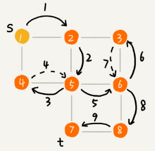

BFS&DFS
“搜索”算法
深度优先搜索算法和广度优先搜索算法都是基于“图”这种数据结构。
图上的搜索算法就是，在图中找出从一个顶点出发，到另一个顶点的路径。图上的搜索算法有深度优先、广度优先搜索算法，和$A$、$IDA$ 等启发式搜索算法。
广度优先搜索和深度优先搜索是图上的两种最常用、最基本的搜索算法，仅适用于状态空间不大的搜索。它们比$A$、$IDA$ 等启发式搜索算法要简单粗暴，没有什么优化，所以也叫作暴力搜索算法。
广度优先搜索，采用地毯式层层推进，从起始顶点开始，依次往外遍历。广度优先搜索需要借助队列来实现，遍历得到的路径就是起始顶点到终止顶点的最短路径。
深度优先搜索，采用回溯思想，适合用递归或栈来实现。遍历得到的路径并不是最短路径。
深度优先和广度优先搜索的时间复杂度都是 O(E)，空间复杂度都是 O(V)。其中E代表边，O代表顶点。
下面java语言实现用邻接表来存储无向图：
public class Graph { // 无向图
private int v; // 顶点的个数
private LinkedList<Integer> adj[]; // 邻接表
public Graph(int v) {
this.v = v;
adj = new LinkedList[v];
for (int i=0; i<v; ++i) {
adj[i] = new LinkedList<>();
}
}
public void addEdge(int s, int t) { // 无向图一条边存两次
adj[s].add(t);
adj[t].add(s);
}
}广度优先搜索（BFS）
广度优先搜索（Breadth-First-Search），简称 BFS。它是一种“地毯式”层层推进的搜索策略，即先查找离起始顶点最近的，然后是次近的，依次往外搜索：

下面的java代码实现基于上面Graph的定义：
bfs() 函数用于搜索一条从 s 到 t 的最短路径，其中 s 表示起始顶点，t 表示终止顶点。
visited是用来记录已经被访问的顶点，用来避免顶点被重复访问。如果顶点 q 被访问，那相应的 visited[q] 会被设置为 true。
queue是一个队列，用来存储已经被访问、但相连的顶点还没有被访问的顶点。
prev用来记录搜索路径。prev[w] 存储的是，顶点 w 是从哪个前驱顶点遍历过来的。比如，通过顶点 2 的邻接表访问到顶点 3，那 prev[3] 就等于 2。为了正向打印出路径需要递归地来打印。
public void bfs(int s, int t) {
if (s == t) return;
boolean[] visited = new boolean[v];
visited[s]=true;
Queue<Integer> queue = new LinkedList<>();
queue.add(s);
int[] prev = new int[v];
for (int i = 0; i < v; ++i) {
prev[i] = -1;
}
while (queue.size() != 0) {
int w = queue.poll();
for (int i = 0; i < adj[w].size(); ++i) {
int q = adj[w].get(i);
if (!visited[q]) {
prev[q] = w;
if (q == t) {
print(prev, s, t);
return;
}
visited[q] = true;
queue.add(q);
}
}
}
}
private void print(int[] prev, int s, int t) { // 递归打印 s->t 的路径
if (prev[t] != -1 && t != s) {
print(prev, s, prev[t]);
}
System.out.print(t + " ");
}广度优先搜索过程分解图：

最坏情况下，终止顶点 t 离起始顶点 s 很远，需要遍历完整个图才能找到。这个时候，每个顶点都要进出一遍队列，每个边也都会被访问一次。
假设顶点的个数为V，边的个数为E，那么广度优先搜索的时间复杂度是 O(V+E)。对于连通图（所有顶点都是连通的）来说，E >= V-1，所以，广度优先搜索的时间复杂度可以简写为 O(E)。
广度优先搜索的空间消耗主要在辅助变量 visited 数组、queue 队列、prev 数组上。这三个存储空间的大小都不会超过顶点的个数，所以空间复杂度是 O(V)。
深度优先搜索（DFS）
深度优先搜索（Depth-First-Search），简称 DFS。
最直观的例子就是“走迷宫”。假设你站在迷宫的某个岔路口，然后想找到出口。你随意选择一个岔路口来走，走着走着发现走不通的时候，你就回退到上一个岔路口，重新选择一条路继续走，直到最终找到出口。这种走法就是一种深度优先搜索策略。
下图中，搜索的起始顶点是 s，终止顶点是 t，希望在图中寻找一条从顶点 s 到顶点 t 的路径。如果映射到迷宫那个例子，s 就是你起始所在的位置，t 就是出口。
下图标记了递归算法的搜索的过程，里面实线箭头表示遍历，虚线箭头表示回退。但深度优先搜索最先找出来的路径，并不是顶点 s 到顶点 t 的最短路径。

深度优先搜索用的是回溯思想，回溯思想非常适合用递归来实现。
下面是java代码实现，其中的 prev、visited 变量跟广度优先搜索的作用一样，变量found的作用是已经找到终止顶点 t 之后，就不再递归地继续查找了。
boolean found = false; // 全局变量或者类成员变量
public void dfs(int s, int t) {
found = false;
boolean[] visited = new boolean[v];
int[] prev = new int[v];
for (int i = 0; i < v; ++i) {
prev[i] = -1;
}
recurDfs(s, t, visited, prev);
print(prev, s, t);
}
private void recurDfs(int w, int t, boolean[] visited, int[] prev) {
if (found == true) return;
visited[w] = true;
if (w == t) {
found = true;
return;
}
for (int i = 0; i < adj[w].size(); ++i) {
int q = adj[w].get(i);
if (!visited[q]) {
prev[q] = w;
recurDfs(q, t, visited, prev);
}
}
}深度优先搜索算法的时间复杂度是 O(E)，E 表示边的个数。因为每条边最多会被访问两次，一次是遍历，一次是回退。
深度优先搜索算法的消耗内存主要是 visited、prev 数组和递归调用栈。visited、prev 数组的大小跟顶点的个数 V 成正比，递归调用栈的最大深度不会超过顶点的个数，所以总的空间复杂度是 O(V)。
如何找出社交网络中的三度好友关系？
六度分割理论说你与世界上的另一个人间隔的关系不会超过六度，也就是说平均只需要六步就可以联系到任何两个互不相识的人。
一个用户的一度连接用户就是他的好友，二度连接用户就是他好友的好友，三度连接用户就是他好友的好友的好友。在社交网络中，我们往往通过用户之间的连接关系，来实现推荐“可能认识的人”这么一个功能。
如何找出一个用户的所有三度（其中包含一度、二度和三度）好友关系？
答：
社交网络可以用图来表示。用图的广度优先搜索算法遍历与起始顶点最近的一层顶点，也就是用户的一度好友，然后再遍历与用户距离的边数为 2 的顶点，也就是二度好友关系，以及与用户距离的边数为 3 的顶点，也就是三度好友关系。用一个数组来记录每个顶点与起始顶点的距离，非常容易就可以找出三度好友关系。
也可以用深度优先搜索来解决这个问题，将递归的终止条件改为距离大于3.
如何将迷宫抽象成图并存储在计算机中？
答：
为迷宫建立二维坐标系，这样每个 分叉路口都会在这个2维坐标系上有一个唯一的坐标。
将所有的分叉路口的坐标作为顶点， 相邻顶点之间连成边，构成一张无向图。
使用散列表来存储，键为所有顶点， 值为该顶点的相邻顶点链表（可将链表替换为有序数组、红黑树或跳表）。